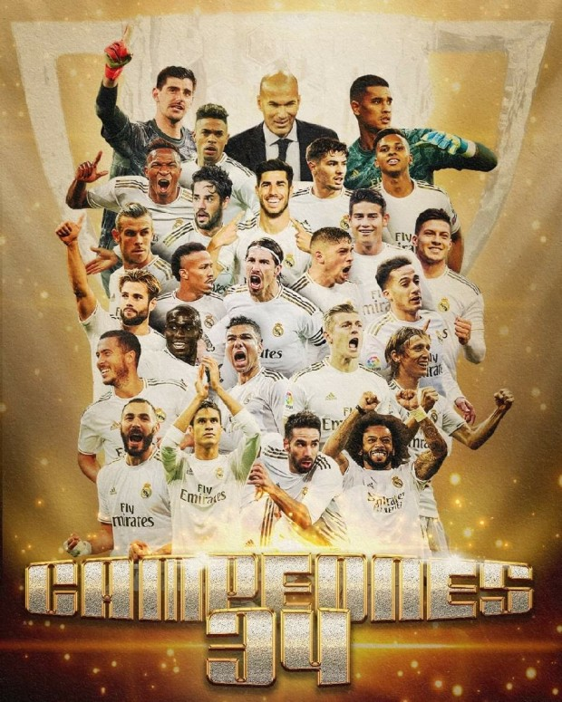
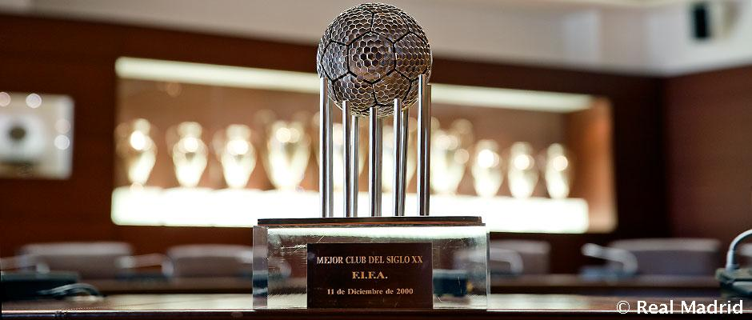
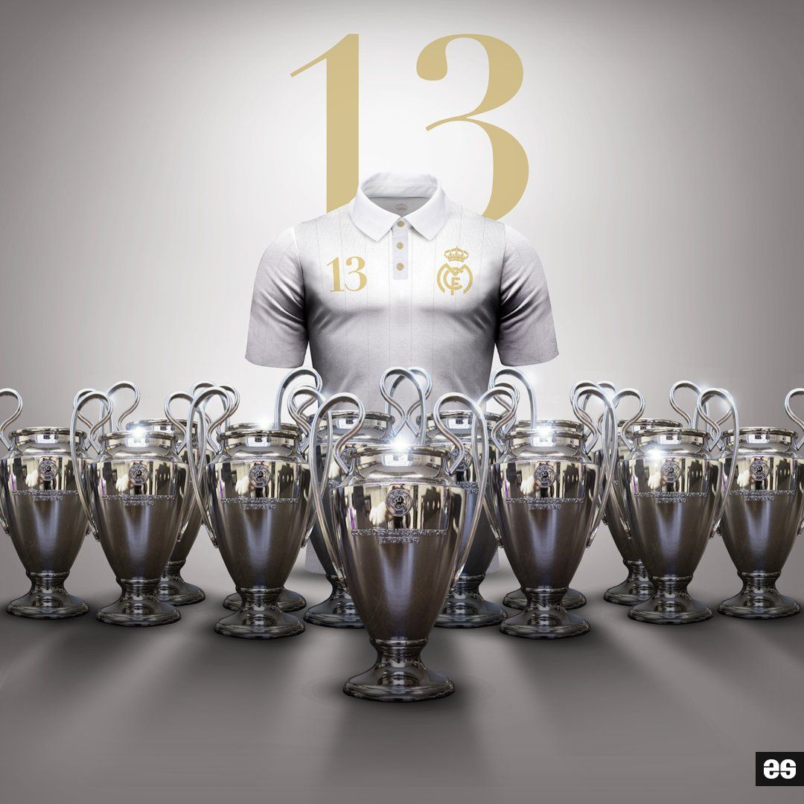
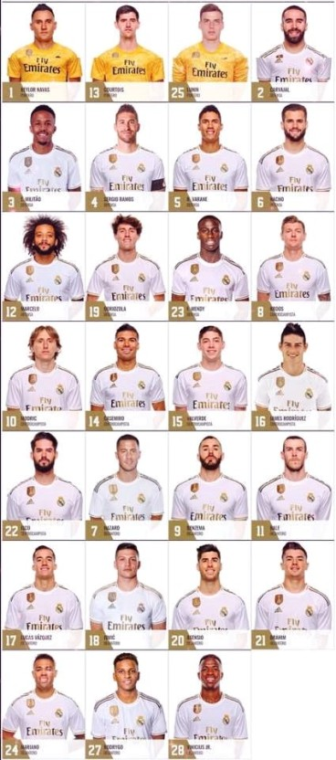

UEFA 챔피언스 리그, 라리가, FIFA 클럽 월드컵 최다 우승 연고지는 마드리드. 홈구장은 에스타디오 산티아고 베르나베우 UEFA 챔피언스 리그, 라리가, FIFA 클럽 월드컵 최다 우승을 자랑하며 '유럽의 왕'이라 불리는 명문 구단으로, 라리가가 1928년 창설된 이후로 단 한 번도 강등당하지 않고 1부 리그에 잔류하고 있다. 20세기부터 스페인과 유럽에서 가장 성공적인 클럽으로, 자국 라이벌 FC 바르셀로나와 함께 라리가를 양분하고 있고, 범위를 유럽 전역으로 넓혀도 가장 거대한 축구 클럽으로 첫 손에 꼽힌다.
 유럽 전역을 통틀어 리그 우승 30회를 넘긴 클럽은 극히 드문 가운데, 레알 마드리드는 34회 우승을 기록하고 있다. 일반적으로 4대 리그라 부르는 라리가, EPL, 세리에 A, 분데스리가에서 가장 먼저 30회 우승을 돌파하였다.라리가뿐 아니라 UEFA 챔피언스 리그 13회 우승 역시 이 대회 최다 우승 기록. 2020-09-07 15:18:02-0900 기준, 1992년 UEFA 챔피언스 리그 개편 전후로 모두 최다 우승 팀이다. 개편 이전 유러피언 컵 시대에 6회, 개편 이후 UEFA 챔피언스 리그 시대에 7회 우승을 기록했다. 게다가 우승 횟수뿐 아니라 통산 출전 횟수, 경기 수, 승, 승률, 승점, 득실 차, 8강 진출 횟수, 4강 진출 횟수, 결승 진출 횟수까지 모든 부문에서 독보적인 1위에 올라 있다.
 유러피언 컵 5연패를 달성한 유일한 팀이자, UEFA 챔피언스 리그 3연패를 달성한 유일한 팀이다. 유러피언 컵 초대 우승팀으로서 대회가 출범한 이래 아직까지 최다 우승팀 자리에서 내려온 적이 없으며, 1992년 UCL 개편 전 6회 우승, 개편 후 7회 우승으로 두 시기 모두 최다 우승팀이다. 